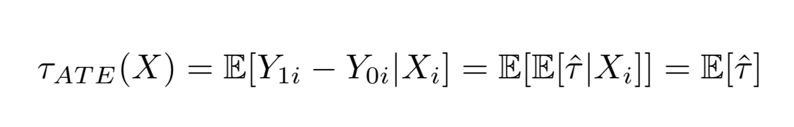
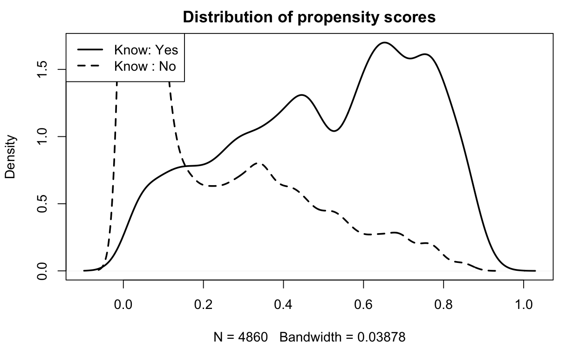

Consumer Studies


More studies to be added ⋅⋅⋅
Social Studies


More studies to be added ⋅⋅⋅
More studies to be added ⋅⋅⋅
More studies to be added ⋅⋅⋅
2020
5 sets of questionnaires
on 7-point Likert scale
surveyed in summer 2020
75 variables
vaccine attributes
demographic data
political data
1971
R
sensemakr
Matching with PS and IPW
Sensitivity Analysis
To make causal inference from observational data, we worked under Selection On Observables (SOO) with two assumptions: conditional ignobility and common support. In other words, selecting a subset of observations where all else being equal statistically, we can then study the treatment factor being randomly present and measure the difference in effect between the treated and untreated. It all comes down to the fundamental rule of making a causal inference: treated effect Y1 - untreated effect Y0 conditioned on comparable X.
Individuals have many attributes - demographic (age, gender, race, education, income) or ideologic (religious beliefs, political leaning, trust in big Pharma, approval of federal government being Trump administration at the time of the survey) or situational (if they know people who get severely sick or dead from covid, or if they can work from home) - and each attribute can have many discrete levels or continuous values. The statistical principle used in this project is Matching. Match all other attributes and leave only the one as treatment factor before measuring the difference that one treatment factor makes. Then that one factor was gauged with other known strong factors to quantify the power of the causal effect.
Several factors are found to be significant in affecting individuals’ choice on vaccine acceptance. I’ll show only one treatment factor studied here: knowing someone in your life hospitalized or dead from covid-19. We can see how our personal experience of how fatal or damaging the virus can cause, not reported on the news, but on someone we know, can have a big push over our vaccine decision. But how much of that force? And can we prove it’s really a push?
In the practice of Selection-on-Observables identification strategy, we applied a few Matching methods: a. propensity scores calculated through logistic regressions on other covariates, and b. weighting with inverse propensity weights (IPW). So we have an “apples to apples” comparison: people with very similar attributes computed by the propensity score in a similar fashion to principle component analysis (PCA) which collapse multi dimensions into one value, and then we check on the difference of whether or not knowing someone sick or dead from covid can make them score 1-7 on willingness for vaccination.
Before matching, the propensity scores between the treated and untreated look like this:
Here we can see the magic of Matching: blue dots are BEFORE matching mean difference between treated and untreated on covariates. It’s all over the place. Orange dots are AFTER matching. The mean difference are much smaller. We found similar apples to apples comparison on that one factor.

After we compared apple to apple, we can see from statistical measurements that given all other covariates, knowing someone with severe health results form Covid has a t-value at 5.384 and for a confounder to explain away what was explained by the treatment at 95% confidence interval, that confounder has to make up 2.4% of residual variance for both the treatment and the outcome.
Another visual way to check how effective this treatment on the outcome is by Sensitive Analysis plotted below. Here we use known factors such as attitude toward mandatory vaccination as benchmark to compare the knowing someone severely sick or dead from the covid factor with. The red dotted line is when the effect of the treatment goes to zero. It is measured as 8 times the effect of mandatory vaccination or 5 times of the trust of pharmaceutical companies.

With all the above quantitative analysis, we can conclude that knowing someone severely sick or dead from covid can make people more willing to take vaccines.